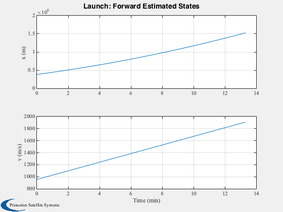
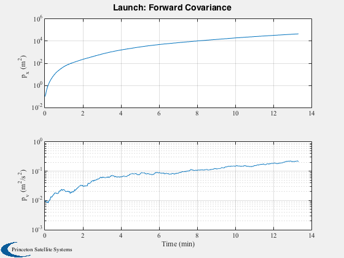
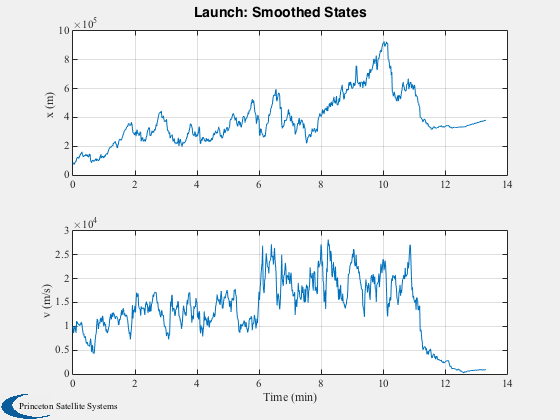
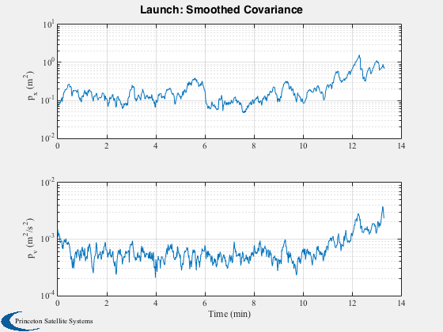
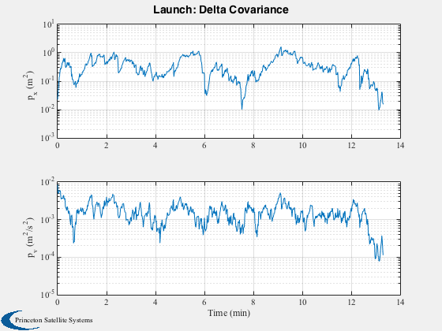

UKF/UKS demonstration.
This is for a 1 dimensional launch problem with an angle sensor that
measures the angle to the launch vehicle. The vehicle is subject
to Gaussian random thrust variations. The sensor is subject to Gaussian
white noise.
The script first runs the simulation and the sensor angle are used
for both the forward and backward Unscented Kalman filters.
The geometry gets worse as the launch vehicle gets higher.
The demo uses UKFUpdate and UKFPredict which are alternatives to UKF.
Since version 11.
clear u pP d
n = 800;
dT = 1;
sigmaT = 0.01;
sigmaTheta = 0.01;
d = struct;
d.m = 1;
d.t0 = 11;
d.g = 9.806;
d.b = 1000;
d.tNoise = sigmaT;
d.noise = sigmaTheta;
x = [0;0];
theta = 0;
t = 0;
xS = zeros(3,n);
for k = 1:n
theta = AngleSensor(x,d);
x = RK4( 'RHSX', x, dT, 0, d );
xS(:,k) = [x;theta];
end
dUKF = d;
u = KFInitialize( 'ukf','f',@RHSX,'alpha',1,...
'kappa',length(x)-2,'beta',2,'dT',dT,'fData',dUKF,...
'p',diag([0.1 0.01]),'q',diag([0 sigmaT^2]),'x',x, 'm',x);
u = UKFWeight( u );
t = 0;
pP = cell(n);
xF = zeros(4,n);
for k = 1:n
xF(:,k) = [u.m;diag(u.p)];
pP{k} = u.p;
u.t = t;
u = UKFPredict( u );
t = t + dT;
end
xB0 = u.m;
pB0 = u.p;
[t,tL] = TimeLabl((0:(n-1))*dT);
Plot2D(t,xF(1:2,:),tL,{'x (m)' 'v (m/s)' },'Launch: Forward Estimated States')
Plot2D(t,xF(3:4,:),tL,{'p_x (m^2)' 'p_v (m^2/s^2)'},'Launch: Forward Covariance','ylog')
u.p = diag([0.1 0.01]);
u.m = [0;0];
t = 0;
pF = cell(n);
for k = 1:n
xF(:,k) = [u.m;diag(u.p)];
pF{k} = u.p;
u.t = t;
u.y.data = xS(3,k);
u.y.param.hFun = @AngleSensor;
u.y.param.hData = dUKF;
u.y.param.r = sigmaTheta^2;
u = UKFPredict( u );
u = UKFUpdate( u );
t = t + dT;
end
u.dT = -dT;
u.p = pB0;
u.m = xB0;
t = t(end);
pB = cell(n);
xB = zeros(4,n);
for k = n:-1:1
xB(:,k) = [u.m;diag(u.p)];
pB{k} = u.p;
u.t = t;
u.y.data = xS(3,k);
u.y.param.hFun = @AngleSensor;
u.y.param.hData = dUKF;
u.y.param.r = sigmaTheta^2;
u = UKFPredict( u );
u = UKFUpdate( u );
t = t - dT;
end
xC = zeros(4,n);
for k = 1:n
[xS, pS] = KalmanFilterCombine( xB(1:2,k), pB{k}, xF(1:2,k), pF{k} );
xC(:,k) = [xS;diag(pS)];
end
[t,tL] = TimeLabl((0:(n-1))*dT);
Plot2D(t,xC(1:2,:), tL, {'x (m)' 'v (m/s)'}, 'Launch: Smoothed States')
Plot2D(t,xC(3:4,:), tL, {'p_x (m^2)' 'p_v (m^2/s^2)'},'Launch: Smoothed Covariance','ylog')
Plot2D(t,abs(xC(3:4,:) - xF(3:4,:)), tL, {'p_x (m^2)' 'p_v (m^2/s^2)'},'Launch: Delta Covariance', 'ylog')
    